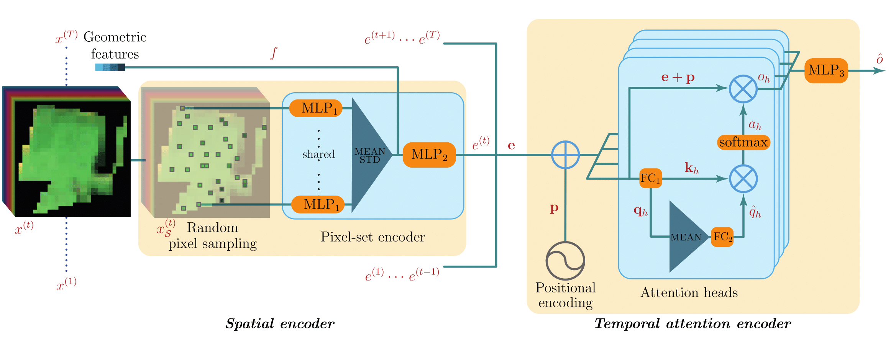
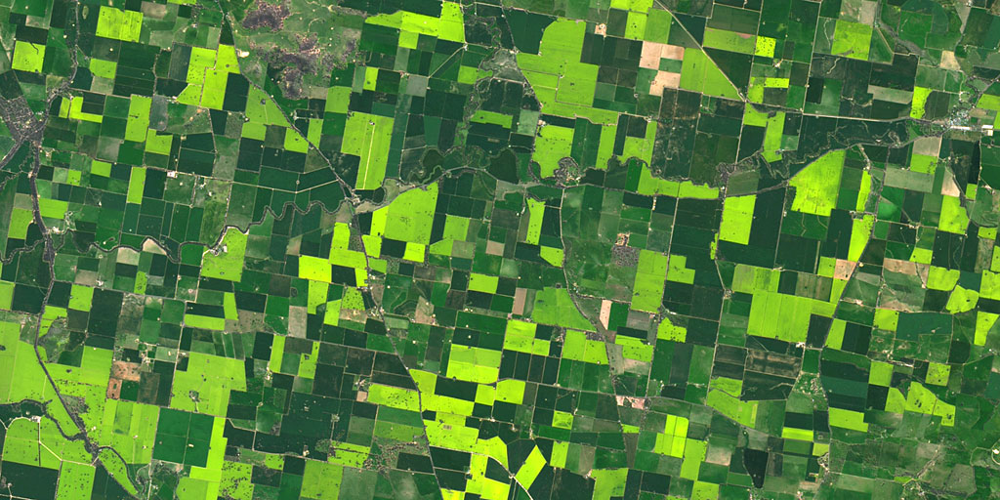

Vivien Sainte Fare Garnot
73 avenue de Paris · 94165 Saint-Mandé CEDEX ·
vivien.sainte-fare-garnot@ign.fr
PhD Student. Deep Learning for Satellite Image Time Series.
Member of the STRUDEL research team
Doctorant. Apprentissage profond pour les séries temporelles d'images satellites.
Membre de l'équipe STRUDEL
Research Interests
Sujets de recherche

Remote Sensing for Agriculture
Télédétection pour l'agriculture
Education
Université Paris-Est
PhD in Geospatial Computer Vision
October 2018 - Present
Imperial College Londo
Master of Science in Environmental Technology
2016 - 2017
Ecole Polytechnique
Master of Science and Engineering
2012 - 2016
Publications
[ACL] Journals
[ACLN] Journals
[ASCL] Others
[ACTI] Conferences
[ACTN] Conferences
[COM] Conferences
[OS] Books and Chapters
[DO] Books and Chapters
[AFF] Posters
[AP] Preprints
[TH] Dissertations
[INV] Invited Talks
[PV] Popularization